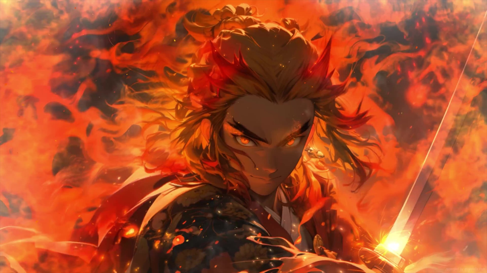
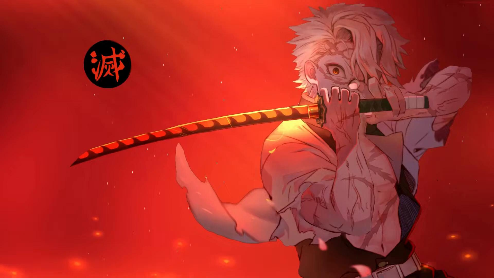
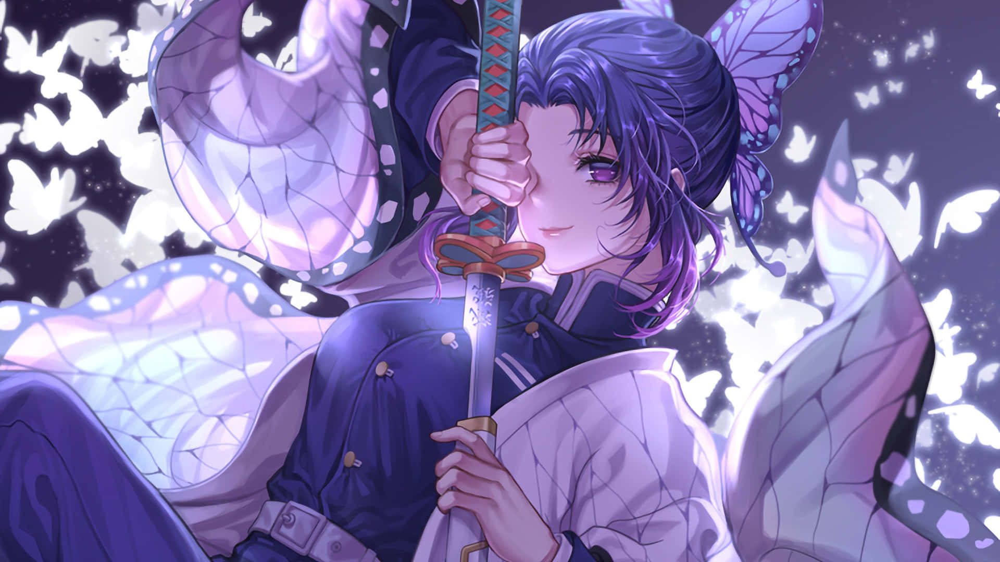
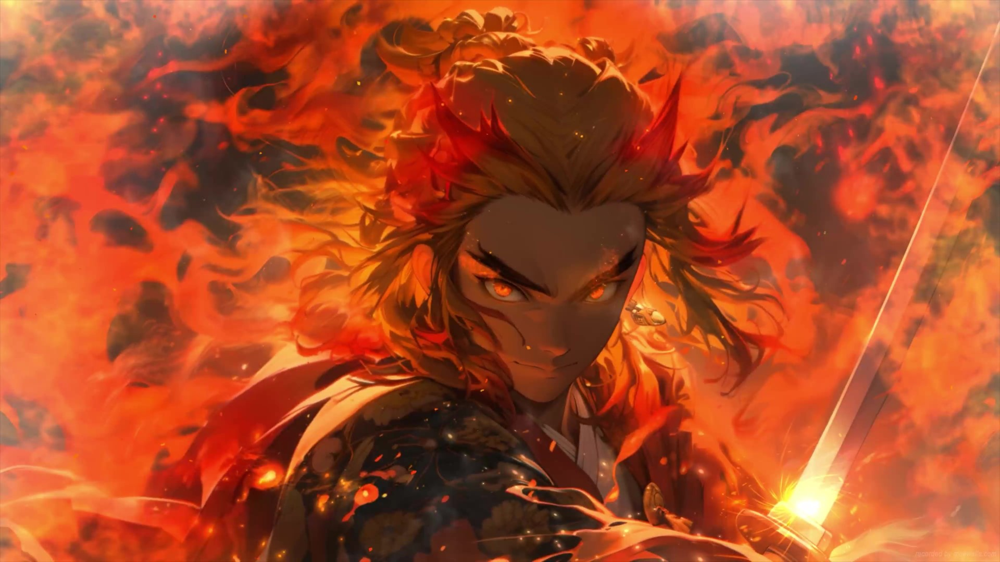
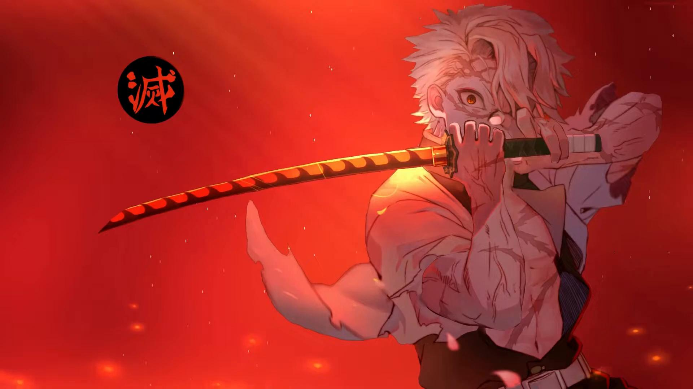
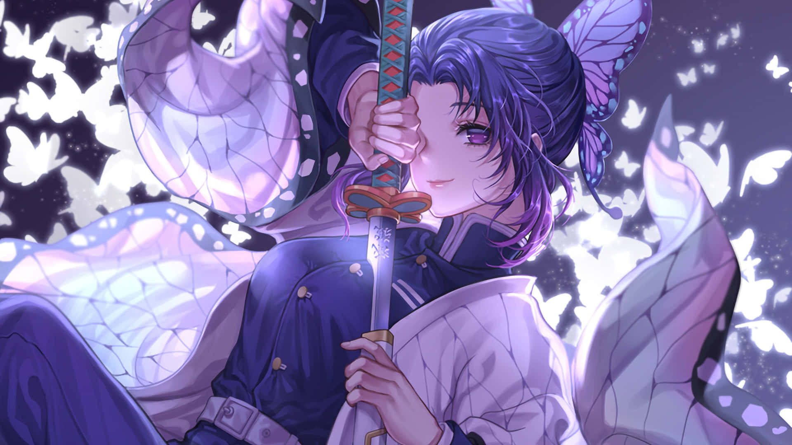

Giyu Tomioka
Giyu Tomioka, o Hashira da Água, Ele é o personagem responsável por dar uma segunda chance à Nezuko e a ajudar Tanjiro a se tornar um Caçador de Demônios.
Mitsuri Kanroji
Mitsuri é uma garota bastante doce e gentil, sempre sendo amorosa e agradável com todos Ela frequentemente elogia pessoas em sua cabeça e por conta de seu jeito carinhoso é conhecida como a Hashira do amor.
Muichiro Tokito
Após perder toda a família, Tokito foi recrutado para a Demon Slayer Corps Os ferimentos acabaram lhe causando perda de memória, o que lhe tornou um jovem frio e sem sentimentos. Assim, ele se tornou um prodígio entre os caçadores e o Hashira da Névoa que conheceremos no Arco da Vila dos Ferreiros.
Obanai Iguro
um personagem coadjuvante na série de mangá Demon Slayer: Kimetsu No Yaiba, bem como sua adaptação para anime. Obanai era um Caçador de Oni e o Hashira da Serpente do Esquadrão de Caçadores de Onis, estando entre os poderosos Hashira.
Kyojuro Rengoku
é um Caçador de Demônios e o atual Pilar de Chamas dos Caçadores de Demônios. Kyojuro é um jovem adulto de alta estatura, com cabelos amarelos brilhantes com mechas vermelhas, sobrancelhas pretas bifurcadas e olhos dourados.
Sanemi Shinazugawa
Sanemi Shinazugawa é um membro da Demon Slayer Corps, estando entre os espadachins mais habilidosos da equipe: os Hashiras! Ele é o atual Hashira do Vento e, claro, domina com maestria a Respiração do Vento.
Shinobu Kocho
Com uma espada similar ao ferrão de um inseto, a Hashira se refere às “formas” de cada movimento como “danças” e utiliza venenos para imobilizar e derrotar seus inimigos. Desta forma, veneno e velocidade são critérios marcantes na performance de Shinobu, sendo apontada como a exterminadora mais rápida entre os Hashiras.
Tengen Uzui
Tengen Uzui é uma pessoa excêntrica, chamativa e extravagante. Quando está na presença de Tanjiro, Zenitsu e Inosuke aparece frequentemente dizendo como ele mesmo é um “Deus” e exigindo para ser tratado como um. Inosuke, também cheio de si, diz que também é um Deus, mas recebe a discordância do Hashira.